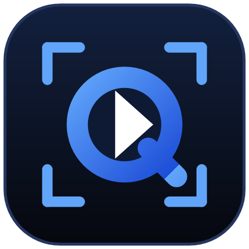
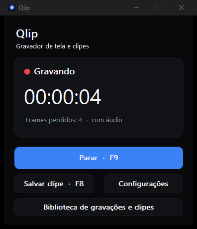
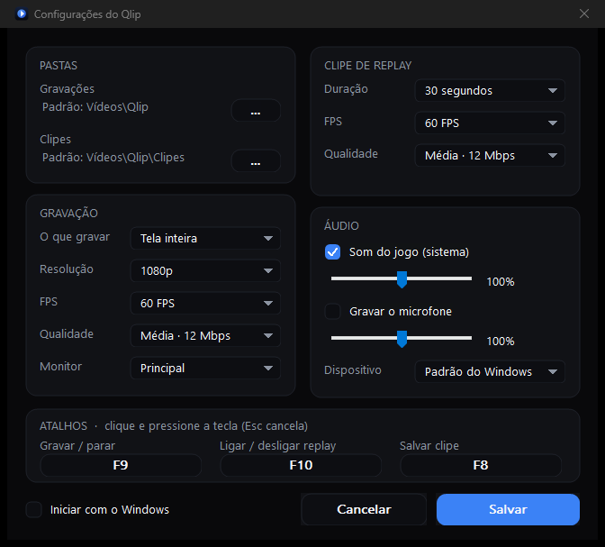
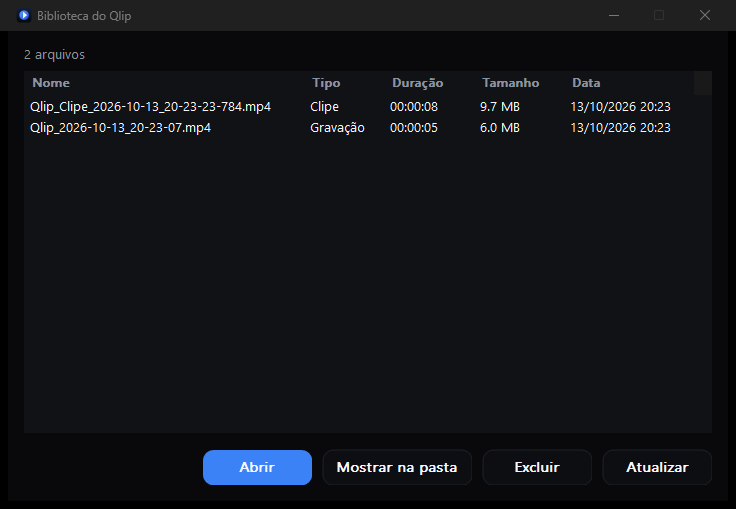

● gravação
Gravação contínua
F9 grava e para. H.264 pelo NVENC, 30, 60 ou 120 FPS constantes, resolução original, 1080p ou 720p, quatro níveis de qualidade.
00:12:481080p6012 Mbps

QLIPv0.1.0 · open source · Windows

Grave a tela e salve os últimos segundos do jogo com uma tecla. Nativo, leve e open source: o encoder da placa de vídeo faz o trabalho pesado.
replay instantâneo
Com o replay ligado, o Qlip guarda os últimos segundos já comprimidos pela placa de vídeo, em memória. O F8 salva esse trecho num MP4 e a gravação continua, sem pausa.
recursos
● gravação
F9 grava e para. H.264 pelo NVENC, 30, 60 ou 120 FPS constantes, resolução original, 1080p ou 720p, quatro níveis de qualidade.
↺ replay
O buffer guarda pacotes já codificados, nunca frames brutos. O clipe sempre começa num keyframe e abre em qualquer player.
♪ áudio
Som do sistema e microfone, cada um com volume próprio, sincronizados com o vídeo pelo mesmo relógio. Desconectou o fone? Ele reconecta sozinho.
▣ alvo
Escolha o monitor ou grave só a janela do jogo. Mudou a resolução no meio da partida? A gravação continua.
⟲ segurança
A gravação é escrita em fragmentos. Se o PC travar ou o app fechar, o arquivo é recuperado na próxima abertura.
⌘ atalhos
Troque qualquer atalho clicando e apertando a tecla. Se outro app já usa a combinação, o Qlip avisa em vez de falhar calado.
por dentro
Interface nativa do Windows, sem navegador embutido. As telas abaixo são o app de verdade.


desempenho
Números reais de uma RTX 2060 com i7-10700F, em 1080p60 e qualidade média. A carga foi um padrão de teste em movimento, não um jogo; o impacto em FPS de jogos ainda não foi medido.
privacidade
Tudo roda local. Não existe conta, servidor nem telemetria.
Vídeos\Qlip. Nada sai do seu computador.%APPDATA%\Qlip.código aberto
O Qlip é open source sob a licença MIT. C++20 nativo, sem Electron e sem servidor local: captura pela GPU, encode pelo NVENC e escrita em disco em threads separadas.
Achou um bug ou tem uma ideia? Abra uma issue ou mande um pull request.
# Visual Studio 2022 Build Tools + CMake 3.24+ git clone https://github.com/PQueirozDev/Qlip cd Qlip pwsh scripts/fetch-ffmpeg.ps1 # FFmpeg LGPL (headers, libs, DLLs) cmake -S . -B build -A x64 cmake --build build --config Release
download · v0.1.0
Versão portátil para Windows 10 e 11 (x64). Extraia o zip e abra o Qlip.exe, sem instalação. Precisa de uma placa NVIDIA com NVENC.
sem conta · sem nuvem · sem telemetria · MIT